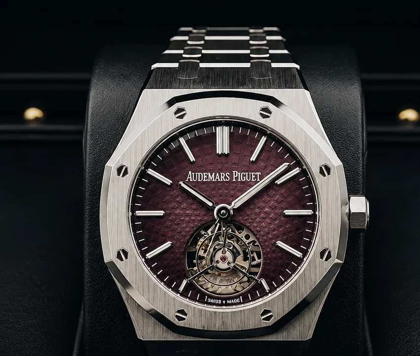
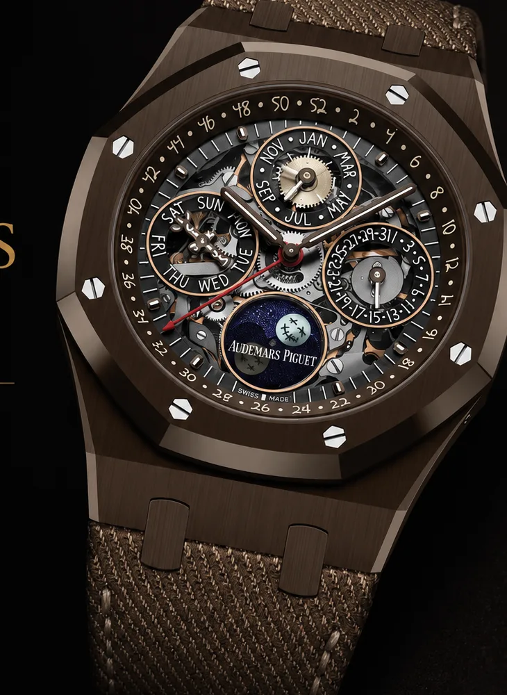
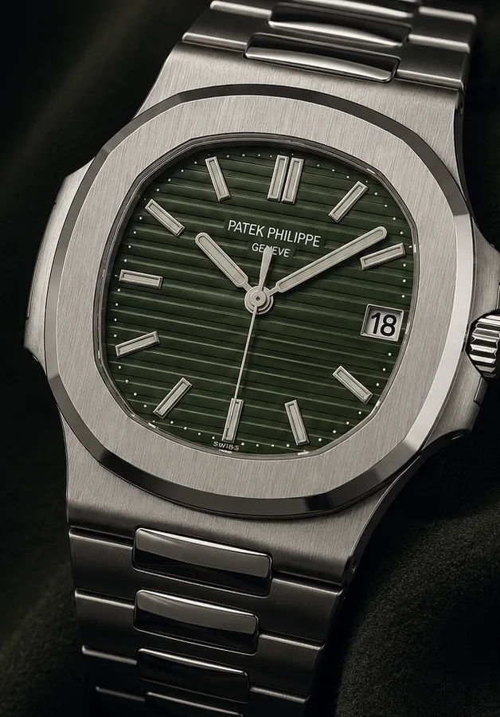
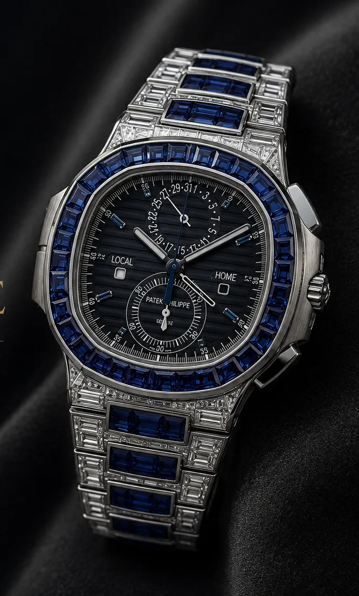
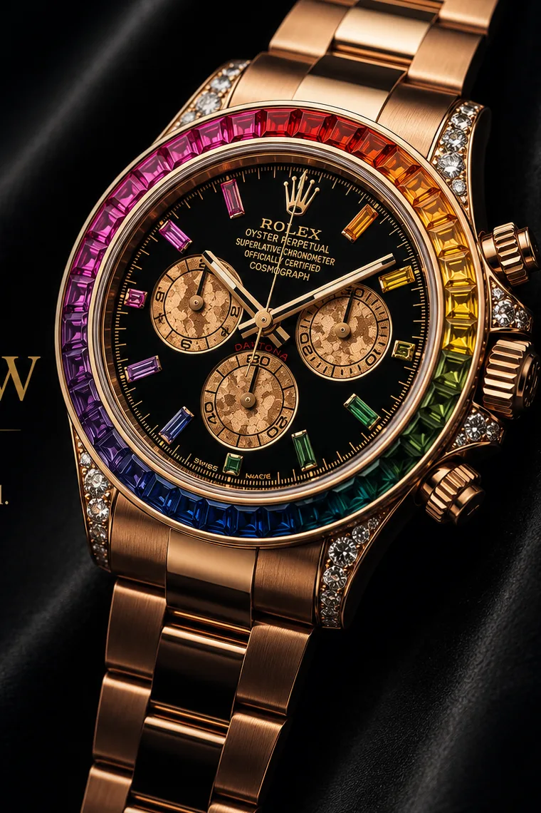
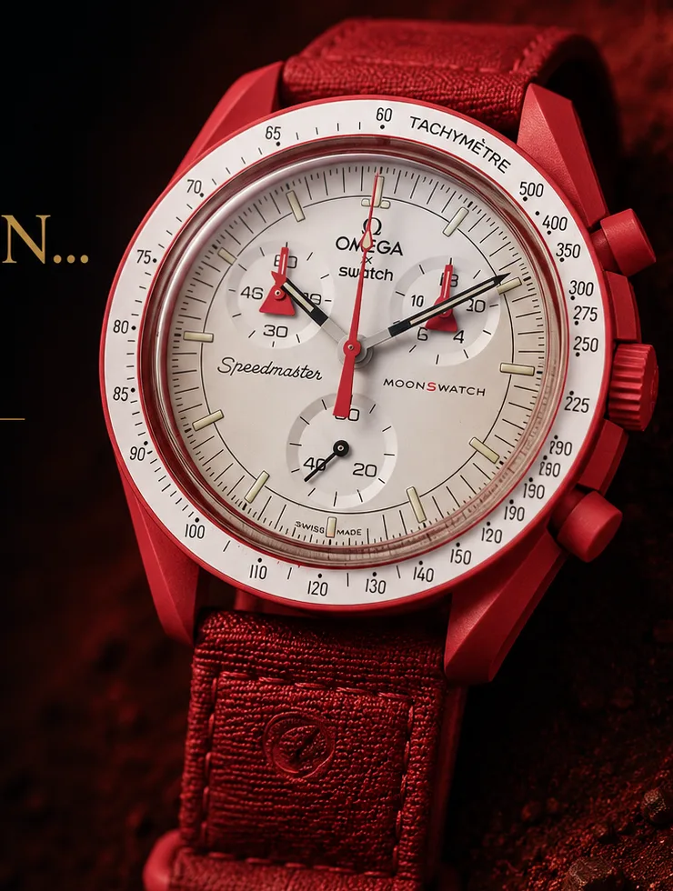

Ask which footballer keeps the deepest watch box and the conversation usually runs straight to Ronaldo. But Zlatan Ibrahimović's collection rewards a closer look — more than two dozen verified pieces concentrated almost entirely in the holy trinity of steel sports watches: Audemars Piguet, Patek Philippe and Rolex, with the occasional gem-set detour and one deliberately absurd quartz outlier. Where some athletes collect for pure spectacle, Zlatan collects like a purist with a maximalist streak.
Now a 2026 World Cup analyst on FOX, the Sweden legend has spent years assembling one of the game's most serious wrists. Below is the collection, identified maison by maison — every piece we can document, with a route to find each brand through the Watch Finder.
Watch Finder
Source Audemars Piguet, Patek Philippe and Rolex from verified dealers worldwide
63 verified dealers · worldwide
AUDEMARS PIGUET — THE CORE
The Royal Oak is the spine of the collection — steel, ceramic and forged carbon, from a clean openworked time-only to a tourbillon chronograph.


Audemars Piguet
Royal Oak Double Balance Wheel Openworked — 15416CE
Black ceramic, 41mm. A fully skeletonised dial with the patented twin balance wheels on display — the monochrome anchor of the collection.
Audemars Piguet
Royal Oak Selfwinding Flying Tourbillon — 26730ST
Steel, smoked burgundy dial. A flying tourbillon dropped into the everyday 41mm Royal Oak case — restraint and complication at once.
Audemars Piguet
Royal Oak Perpetual Calendar Openworked "Travis Scott" — 26585CM
The culture-crossover piece — the openworked Royal Oak perpetual calendar tied to the Travis Scott collaboration.
Audemars Piguet
Royal Oak Perpetual Calendar Openworked — 26585XT
A further openworked Royal Oak perpetual calendar (ref. 26585XT) — the complication on full display.
Audemars Piguet
Royal Oak Offshore Selfwinding Chronograph — 26650FO
The "Las Vegas" blue forged-carbon Offshore chronograph — the loudest, most sport-luxe statement in the box.
Audemars Piguet
Royal Oak Selfwinding Chronograph — 26240
The contemporary 41mm Royal Oak chronograph (ref. 26240) — the modern everyday hero of the line.
Audemars Piguet
Royal Oak Openworked Tourbillon Chronograph — 26545XT
Top of the Royal Oak complication ladder — an openworked tourbillon chronograph (ref. 26545XT).
PATEK PHILIPPE — THE NAUTILUS DEPTH
Few private collections run this deep on the Nautilus: the discontinued 5711 (including the olive-green dial), gem-set white gold, travel-time and annual-calendar complications, and a piece from Patek's new Cubitus line.


Patek Philippe
Nautilus 5711/1A
The discontinued steel Nautilus that defined the hype era — his examples include the coveted olive-green dial.
Patek Philippe
Nautilus 5711/1A-014
The blue-dial steel 5711 in its final-series form — the reference collectors chased hardest before its retirement.
Patek Philippe
Nautilus 5711/111P
Gem-set drama — a white-gold Nautilus 5711 set with rubies and sapphires. The flex piece of the Patek run.
Patek Philippe
Nautilus 5980 (incl. 1R rose gold · 60G white gold)
The steel-and-precious-metal Nautilus flyback chronograph — the sportiest of the classic Nautilus complications.
Patek Philippe
Nautilus 5990/1A
Nautilus Travel Time Chronograph in steel — dual time and chronograph in one integrated-bracelet sports watch.
Patek Philippe
Nautilus 5990/1R
The 5990 Travel Time Chronograph in rose gold — the warmer, dressier execution.
Patek Philippe
Nautilus 5726/1A
Nautilus Annual Calendar with moon phase, steel — the everyday-complication Nautilus.
Patek Philippe
Reference 5723/112R
A rose-gold Patek reference documented on his wrist (5723/112R).
Patek Philippe
Nautilus 5740G
Nautilus Perpetual Calendar in white gold (5740/1G) — the slimline grand-complication Nautilus.
Patek Philippe
Cubitus 5822P
From Patek's new Cubitus line — ref. 5822P, the platinum execution of the brand's bold 2024 sports model.
ROLEX — THE DAYTONA SET
The Rolex holdings centre on the Cosmograph Daytona — steel, precious metal, meteorite, rainbow and pavé — plus the left-handed "Sprite" GMT.

Rolex
Cosmograph Daytona — 116500
Steel Daytona with the ceramic bezel — the modern benchmark sports chronograph and one of the hardest watches in the world to buy at retail.
Rolex
Cosmograph Daytona — 116519 (meteorite dial)
A white-gold Daytona with a meteorite dial — no two faces alike.
Rolex
Cosmograph Daytona "Rainbow" — 116595RBOW
Everose gold with a rainbow-sapphire bezel and baguette markers — the collection's scroll-stopper.
Rolex
Cosmograph Daytona — 116508 (green dial)
The yellow-gold Daytona with the coveted green "John Mayer" dial.
Rolex
Cosmograph Daytona — 116576TBR
Platinum Daytona in full diamond pavé — Rolex's most precious series Daytona.
Rolex
GMT-Master II "Sprite" — 126720VTNR
The left-handed green-and-black GMT in steel — crown on the left, jubilee bracelet.
THE OUTLIER
And then, the wink:

Swatch × Omega
MoonSwatch "Mission to Mars" (~$270)
The deliberate outlier — a Bioceramic MoonSwatch sitting among seven-figure grails. Proof that the collection is run by taste, not price tags.
Zlatan's box reads as one deliberate sentence: the best steel sports watches in the world, a few gem-set exclamation marks, and a $270 MoonSwatch to prove he isn't taking any of it too seriously.
WHAT THE COLLECTION TELLS US
Where the headline-grabbing footballer collections lean on diamonds and bespoke one-offs, Zlatan's is built on the references serious collectors actually chase — the 5711, the ceramic Royal Oak, the steel Daytona. It is a connoisseur's collection worn with a showman's confidence.
That is the part the trade should note. Every one of these maisons — Audemars Piguet, Patek Philippe, Rolex — is sourceable through the Watch Finder, which is where a collection like this stops being a spectator sport and becomes a search you can actually start.
Source These Maisons
Find Audemars Piguet, Patek Philippe and Rolex globally
63 verified dealers · worldwide · all price ranges